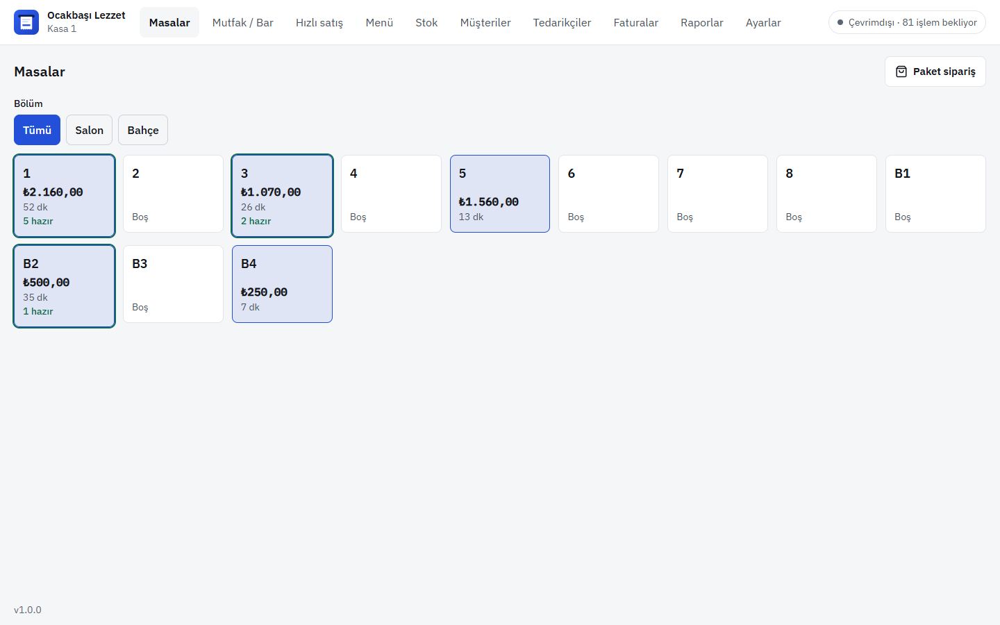
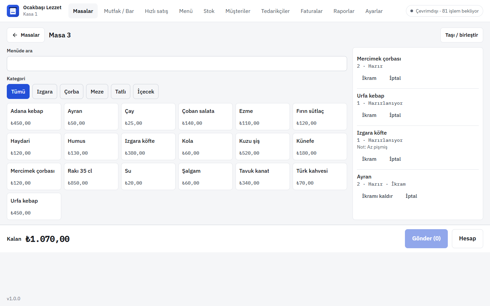
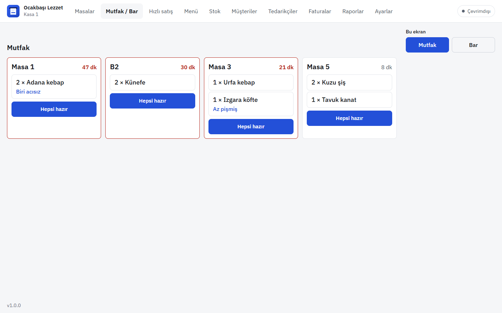
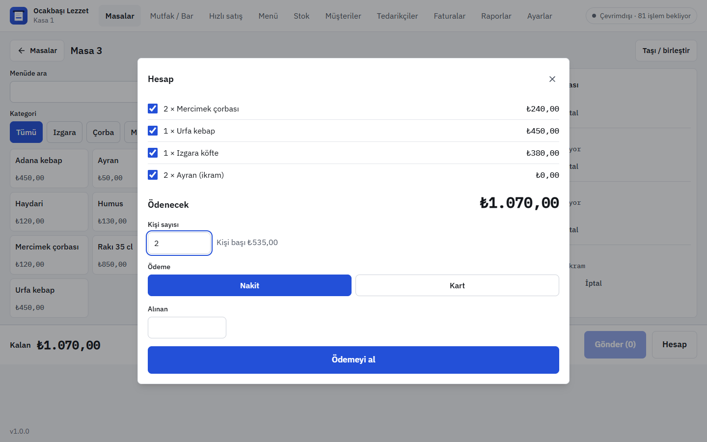
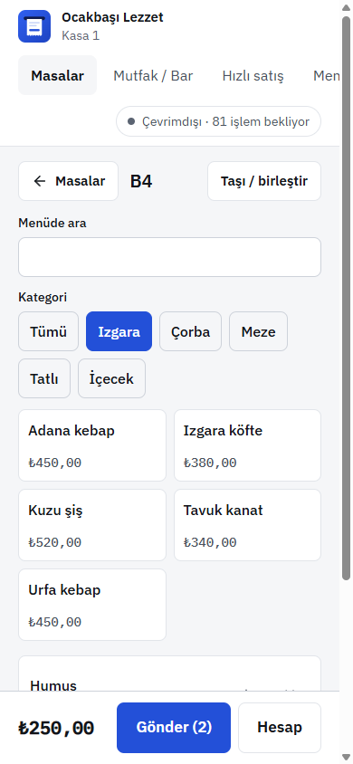

Windows
Kasa bilgisayarı için. Fişi yazıcıya doğrudan basar.
Kurulumu indir (.exe)“Bilgisayarınız korundu” uyarısında Ek bilgi → Yine de çalıştır. Yeni sürümleri kendisi indirip kurar.
Sürüm 1.0 · Restoran, ocakbaşı, kafe ve bar için
Garson siparişi telefondan alır, mutfak ve bar kendi ekranında görür, hazır olunca garsona haber gider. Hesap tek seferde ya da kişi kişi alınır. İnternet gitse de satış durmaz; gelince bütün cihazlar eşitlenir.
Ücretsiz deneme · Kurulum 2 dakika · Türkçe

Büyük düğmeler, az ekran, hızlı sipariş. Garson ilk akşam öğrenir.
Salon, bahçe, teras. Her masada adisyon toplamı, kaç dakikadır açık olduğu ve servise hazır bekleyenler; hazırı olan masa yeşil çerçevelenir.
Kategorili menü ve arama, notlu sipariş (acısız, az pişmiş), aynı yemeğe ikinci dokunuşta adet artar. Tek tuşla mutfağa ve bara gönderilir.
Her istasyon yalnız kendi siparişini görür, masa masa ve en çok bekleyen en üstte; 15 dakikayı geçen kırmızı. Dokununca hazır, garsonun ekranına düşer.
Hepsi birden ya da kalem kalem bölerek; kişi başı tutar, nakitte para üstü, kart. Her ödeme fiş olur, gün sonu (Z) ve raporlara geçer.
Yetkili kişi ikram yapar ya da nedenini yazarak iptal eder. Herkes kendi PIN'iyle girer, her değişiklik kayıtta kalır.
Masayı boş masaya taşıyın ya da iki masanın adisyonunu birleştirin. Paket siparişler masasız açılır, aynı mutfağa düşer.



Kasa bilgisayarında “Market kur” ile kendi e-postanızla işletmenizi açın, Ayarlar → Masalar'dan masaları ekleyin, Menü'de her ürünün mutfakta mı barda mı hazırlandığını seçin.
Telefona Android uygulamasını kurun ya da tarayıcıda açıp ana ekrana ekleyin; aynı e-posta ve şifreyle “Markete giriş yap”. Mutfaktaki tablette Mutfak / Bar ekranını açın.
Garsonun gönderdiği sipariş mutfakta belirir, “hazır” garsona döner, hesap kasada ya da masada alınır. İnternet kesilirse her cihaz çalışmayı sürdürür; gelince eşitlenir.
Şifre telefonda ya da kasada saklanmaz. Kaybolan bir cihazı işletme sahibi kapatabilir.

Kasa bilgisayarı için. Fişi yazıcıya doğrudan basar.
Kurulumu indir (.exe)“Bilgisayarınız korundu” uyarısında Ek bilgi → Yine de çalıştır. Yeni sürümleri kendisi indirip kurar.
Garsonun telefonu ya da mutfağın tableti.
Uygulamayı indir (.apk)Telefon sorarsa bu kaynaktan yüklemeye izin verin. Yeni sürüm eskisinin üstüne kurulur, veriler kalır.
iPhone, iPad ya da herhangi bir bilgisayar. Kurulum yok.
Restoran Kasa'yı açSafari'de “Ana Ekrana Ekle”, Chrome'da “Yükle” ile uygulama gibi açılır ve internetsiz de çalışır.
Her cihaz sipariş almaya ve satış yapmaya devam eder; işlemler önce cihaza yazılır. İnternet yokken mutfak tableti yeni siparişi göremez; internet gelince hepsi kendiliğinden gönderilir.
Menü'de ürünü açın, “Hazırlandığı yer” Mutfak, Bar ya da Hazırlanmaz olsun. Hazırlanmayanlar (şişe su gibi) gönderilince hazır sayılır.
Evet. Hesap penceresinde her kişinin yediklerini seçip ödemesini alın; kalanlar masada açık kalır. İsterseniz kişi sayısını yazın, kişi başı tutar görünür.
Her cihazda bir kopyası, bir de işletmenin sunucusunda. Her işletme yalnız kendi verisini görür; Ayarlar → Yedek'ten tek dosya halinde yedek alabilirsiniz.
Windows sürümü yeni sürümü kendisi indirir ve kurar. Android'de Ayarlar → Güncelleme'de indirme bağlantısı çıkar. Tarayıcı sürümü kendini günceller.